Ristorante · Pizzeria · Feste a Pagani
La vostra festa a Pagani, apparecchiata da noi
4,3 su Google · 1.701 recensioni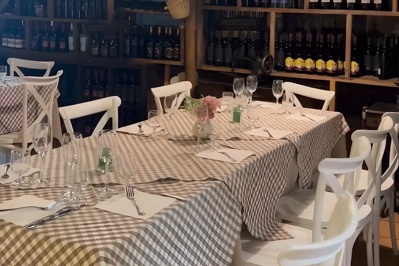
Che festa state organizzando?
Giardino, sale, cucina: scorri
Le feste
Ogni festa ha il suo tavolo
Comunioni, diciottesimi, battesimi e compleanni: sala riservata o giardino, allestimento e torta li decidiamo insieme.
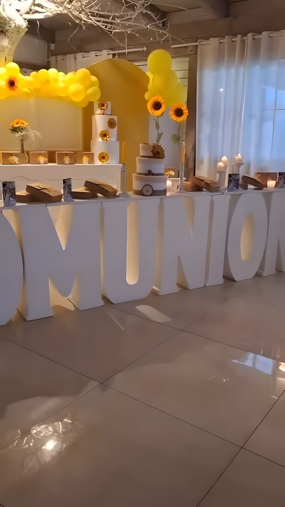
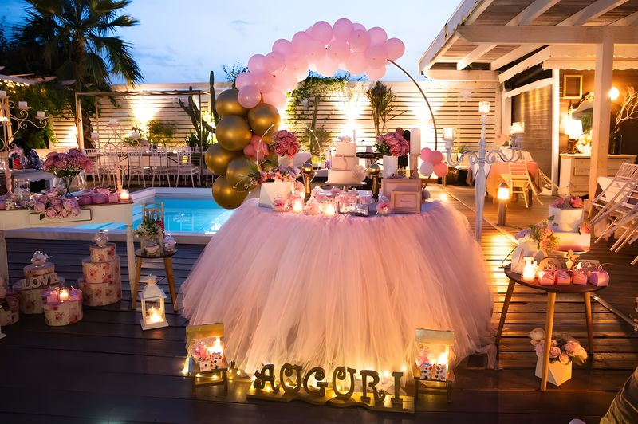
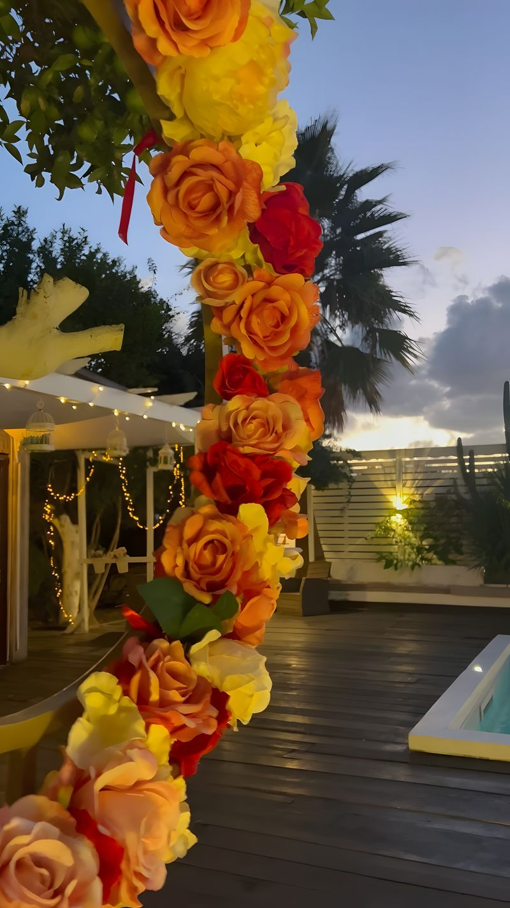
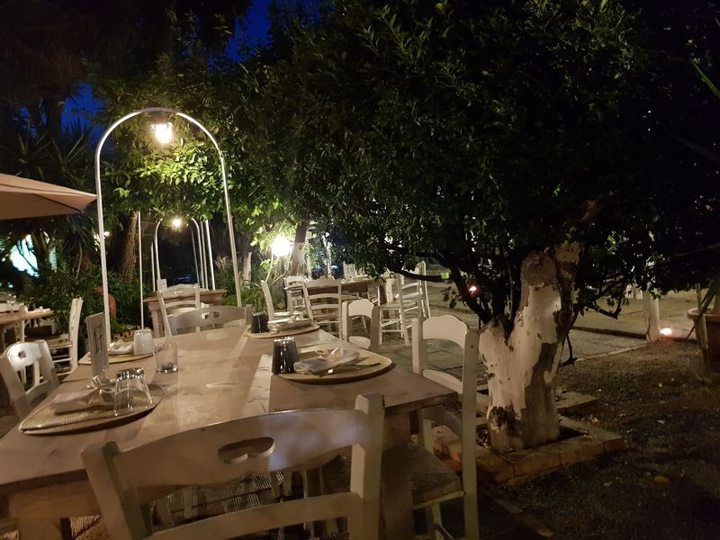
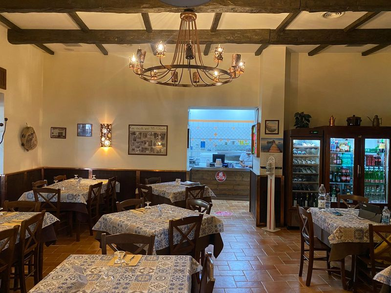
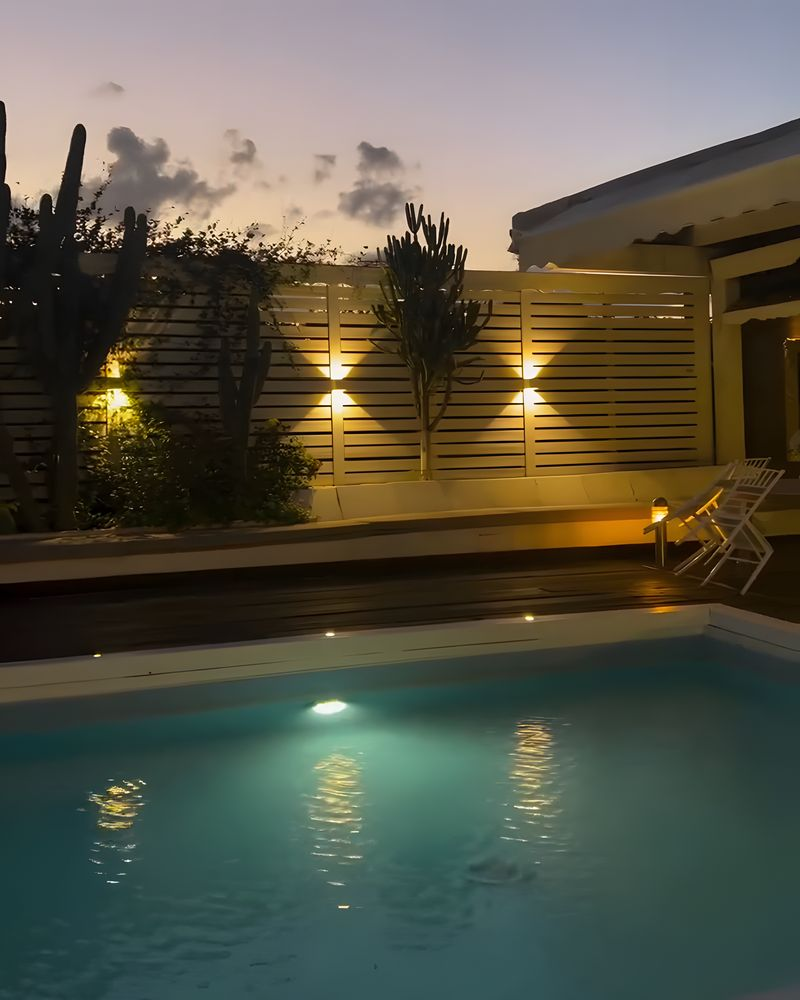
Il giardino
I tavolini sotto gli alberi, la piscina accanto
Il nome viene da qui. D'estate si mangia all'aperto tra gli alberi e il viale con gli archi; d'inverno ci sono le sale col legno e il lampadario.
- Giardino con viale e tavoli all'aperto
- Piscina sulla terrazza delle feste
- Sale interne per l'inverno e una sala riservata
Dalla cucina
L'antipasto di cui parlano tutti
Quasi cento recensioni su Google citano l'antipasto. Poi la brace, la pizza del forno e il mare.
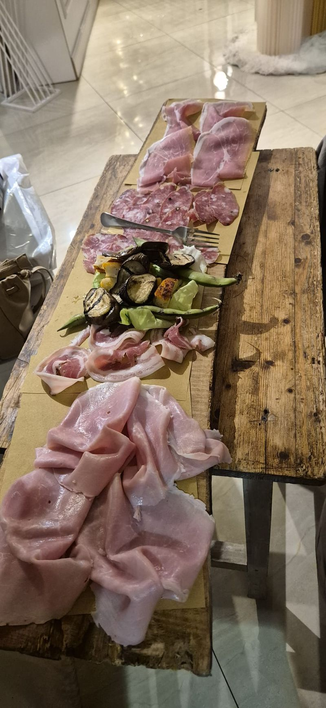
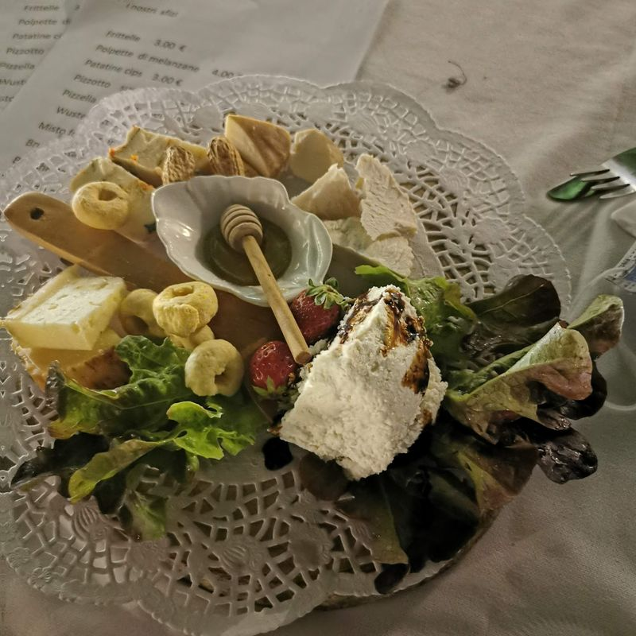
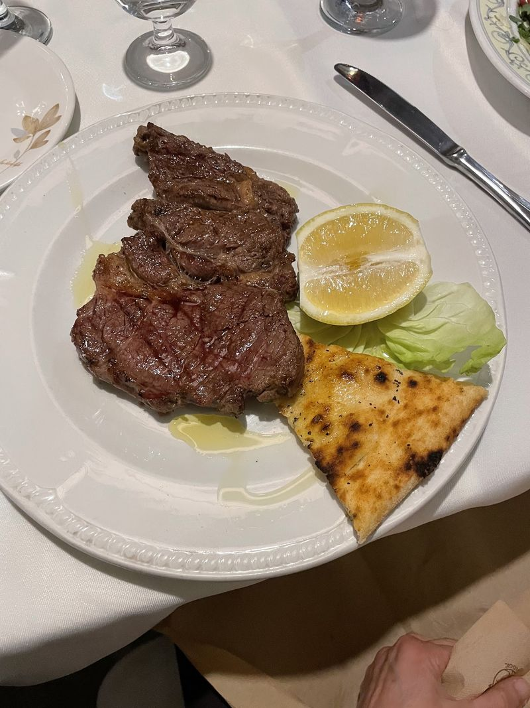
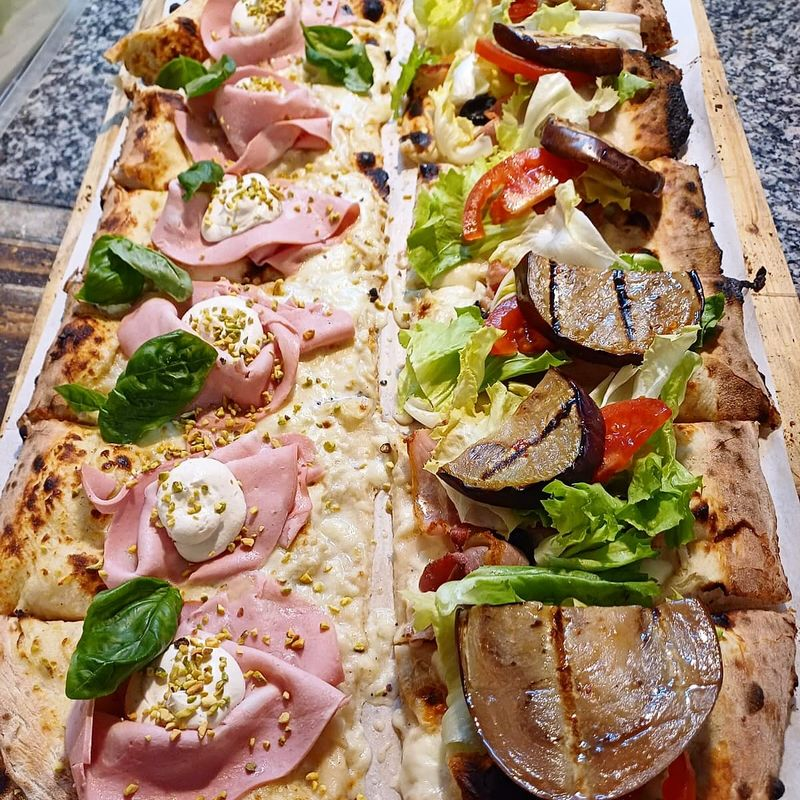
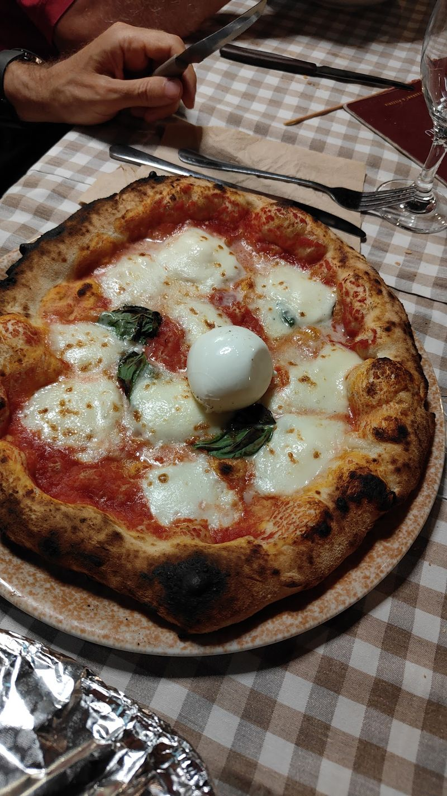
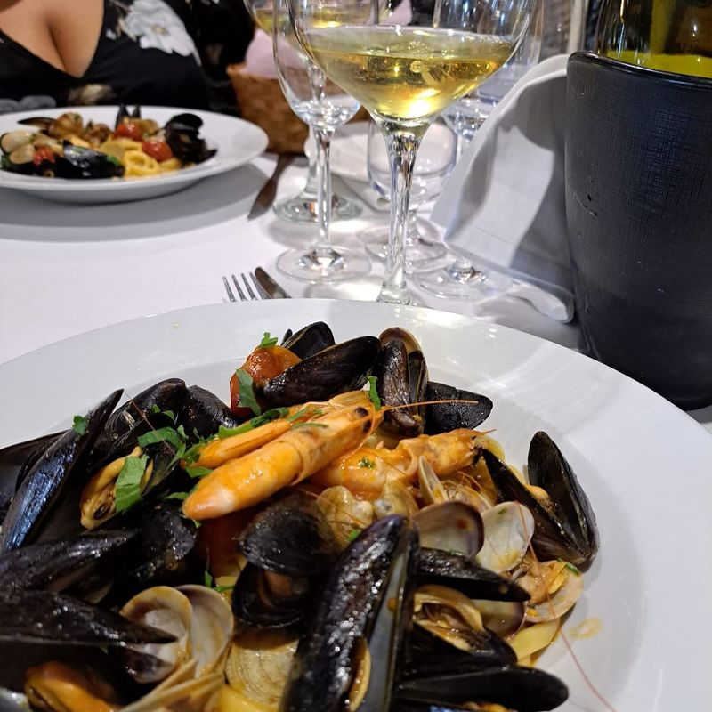
Dicono di noi
Recensioni
Fantastica ambientazione rustica con personale giovane, competente e gentile.
Dal riepilogo delle recensioni su Google Molto bello il locale, abbiamo mangiato benissimo, anche la pizza ottima, il personale attento, simpatico e disponibile. Consigliato
Veronica Salerno · Google Locale rustico e di particolare arredamento. Menù molto vasto, offre anche una buona pizza. Ampia selezione di ottimi antipasti.
Carmine D'Antuono · Google servizio top complimenti davvero piatti meravigliosi e buoni tagliata di carne bella abbondante
Salvofoodblog · Google
Vi aspettiamo
Via Corallo 157, Pagani
- Da martedì a sabato 20:00–24:00 · domenica 12:30–16:00 · lunedì chiuso
- Apri in Google Maps
- 329 457 0270
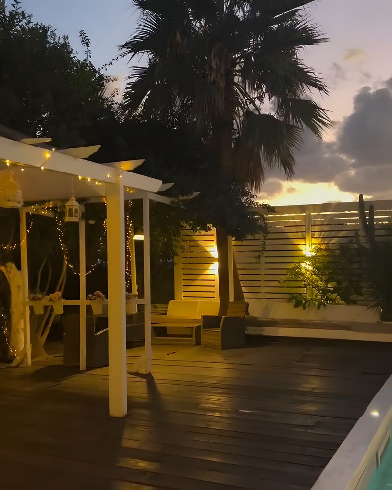